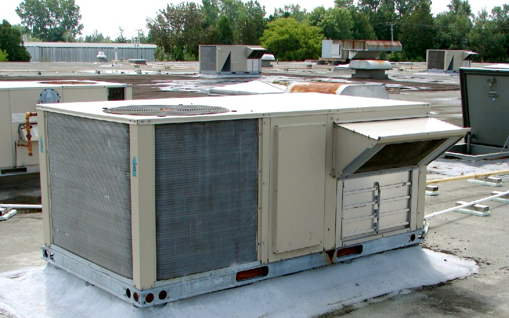

Commercial AC Asset Register
Track unit type, capacity, location, model, faults and maintenance history in one useful list. Preventive maintenance is most useful when its frequency and scope reflect operating hours, dust, humidity, occupancy and the consequences of a breakdown.

What to Check and Record
Service Planning in Mumbai
For commercial ac asset register, useful diagnosis starts with the actual operating condition rather than a guessed part or repair. Mumbai heat, humidity, dust, building access and long daily running hours can change both the symptom and the suitable maintenance frequency.
Coldway Comforts provides independent inspection and service support. The technician should explain the observed issue and proposed scope before major repair, gas work, parts replacement or AMC approval.
Related Cooling Topics
AC Preventive Maintenance Schedule
Build a service frequency around use, dust, humidity, occupancy and equipment condition.
AC AMC Scope Checklist
Compare planned visits, covered tasks, exclusions, consumables, breakdown support and approval rules.
Comprehensive vs Non-Comprehensive AC AMC
Understand how parts, labour, consumables and exclusions may differ between contract structures.
AC Maintenance Before Summer
Inspect cooling and airflow before peak heat increases workload and booking demand.
Commercial AC Asset Register FAQs
What information helps with commercial ac asset register?
Share the brand, model, AC type, exact symptom, affected rooms, error indication and when the problem started.
Can I perform checks before booking service?
You can confirm settings, power and accessible filters. Do not open live electrical parts, sealed refrigerant components or unsafe ceiling equipment.
Does Coldway Comforts cover Mumbai and Navi Mumbai?
Yes. Service enquiries are accepted across the listed Mumbai and Navi Mumbai routes, subject to equipment, access and scheduling.